1．初めに
このツールではポートの解放等は行いません
サーバーを立てる場合は、なるべく事前に接続出来ることを確認しておいてください。
ただし、現在は特に接続テストとしての利用を禁止するつもりもありません。
2．全体の動作イメージ
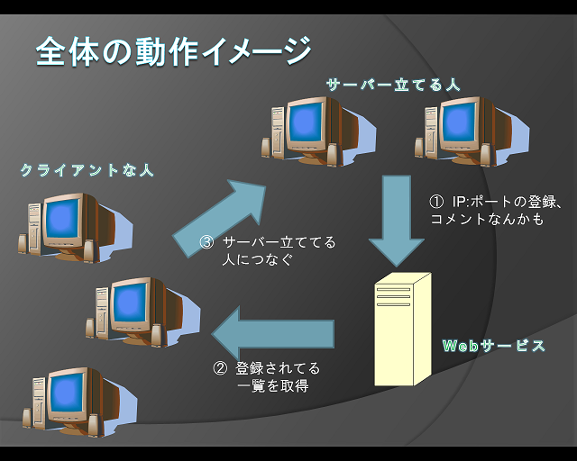
基本的にアドレス・コメントの一覧をWebサービスで預かってるだけです。
緋想天のサーバーを立てている人が登録してないと全く意味がありません。
なお、預かった情報はすべてメモリ上にのみ保持しているだけで、
ファイルやデータベース等には一切出力していません。
3．ファイル構成
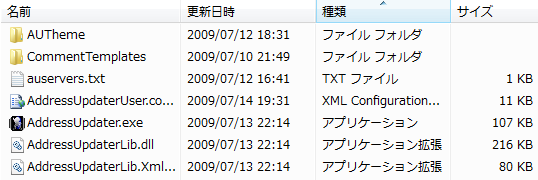
テンプレ保存フォルダ、設定ファイル2、実行ファイル1、動作に必要なdll2の計5つと1フォルダ
設置場所は、address.txt更新する場合は緋想天インストールフォルダに、しないならどこでもOKです
ただしこの4つのファイル（と1フォルダ）だけは同じフォルダに置かなければいけません。
-
AUTheme
テーマ保存フォルダです。 -
CommentTemplates
テンプレ保存フォルダです。文字コードはshift_jisです。 -
auservers.txt
接続先サーバーのインポート・エクスポートファイルです。
ユーザー設定タブの中のサーバータブから読み込み・生成することができます。 -
AddressUpdaterUser.config
ユーザー設定保存ファイルです。
各種ユーザー設定が保存されます。 -
AddressUpdater.exe
プログラムの実行ファイルです。 -
AddressUpdaterLib.dll
プログラムの実行に必要なファイルです。 -
AddressUpdaterLib.XmlSerializer.dll
ウィンドウ設定保存用ファイルです。
無くても動きますが、無いと稀にエラーが出るらしいです。
4．設定ファイル
AddressUpdaterUser.config(ユーザー設定保存ファイル)
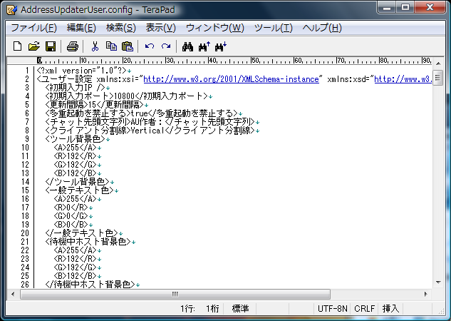
各種ユーザー設定を記憶するファイルです。
IP・ポート・更新間隔・多重起動の許可/不許可・チャット先頭文字列
ランク一覧・サーバー一覧・同時起動ソフト一覧・ウィンドウ位置・おまけ機能の情報が
記憶されます。
5．ホストを登録する準備
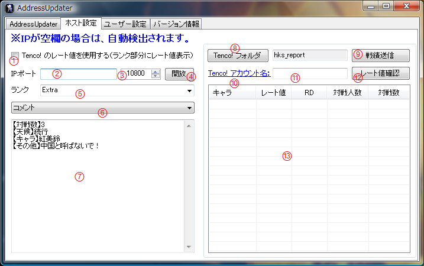
-
① Tenco!のレーティング情報使用
Tenco!を利用する場合にチェックを入れます。
ランク入力部分で、キャラを選択できるようになります。 -
② 登録するIP
空欄の場合はWebサービス側で自動検出を行います。基本的に変更する必要はありません
入力されていた場合は、入力されたIPで登録を行います。 -
③ 使用するポート番号
サーバーへの登録は、記入されたポートが使用中かどうかを検出して行いますので、
ゲームで使用するポートと、このポートは一致させて下さい。 -
④ ポート開放
UPnPを使用し、ルーターのポート開放を行います。
UPnPが利用できる状態であれば、ホストを立てる事が出来るようになるかもしれません。
開放に成功した場合はボタンが非表示になります。
この機能を利用した場合、ツールの終了時にポートを閉じます。 -
⑤ ランク
ユーザー設定のランクに記述されている一覧の中から選択できます。手入力もできます。 -
⑥ テンプレ選択
テンプレ保存フォルダにテキストファイルがある場合、ファイル名の一覧で選択できます。
選択すると、コメント入力欄にテキストファイルの内容がコピーされます。 -
⑦ コメント
品位のある言葉でお願いします。 -
⑧ Tenco!保存フォルダ選択
クリックするとフォルダを選択するダイアログが開きます。
選択すると、右欄にフォルダ名が表示されます。 -
⑨ 戦績送信
クリックすると、⑧で設定したフォルダにある「hks_report.exe」を実行します。 -
⑩ Tenco!マイページ
クリックすると、⑪で設定したアカウント名のマイページをブラウザで開きます。 -
⑪ Tenco!アカウント名
Tenco!に登録してあるアカウント名を入力します。 -
⑫ Tenco!レート値確認
Tenco!サーバーからレート情報を取得し、⑬のリストに表示します。 -
⑬ レート値一覧
Tenco!サーバーから取得したレート値を表示します。
6．メイン画面
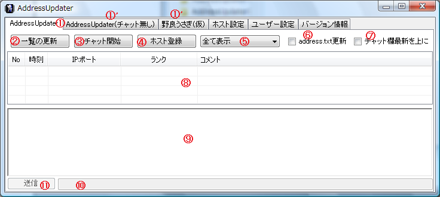
真ん中の仕切り部分はドラッグして動かせます。
-
① サーバー選択タブ
設定されているサーバーの表示を切り替えられます。 -
② 一覧の更新
サーバーに登録されてるホスト一覧を取得し始めます。 -
③ チャット開始
チャットの送受信を開始します。 -
④ ホスト登録
ホスト設定タブに記述してある内容で、サーバーにホストを登録します。
緋想天で実際に「サーバーを立てる」を行っている間のみ登録されます。 -
⑤ ランクフィルタボックス
一覧表示の中から、選んだランクのものだけを抽出して表示します。
address.txtの出力内容にも影響します。 -
⑥ address.txt更新選択
address.txtを更新するかどうかを選択します。 -
⑦ チャット最新表示位置選択
チャット表示部分で、新しい発言を下にするか、上にするかを選べます。 -
⑧ ホスト一覧
取得してきた一覧（サーバー立ててる人たちの）を表示します。
行の上でダブルクリックすると、その行のIP：ポートをクリップボードにコピーできます。
対戦中の場合、背景色が変化します。
[右クリックメニュー]
・クリップボードにコピー
・このIPのホストを表示しない -
⑨ チャット・管理者アナウンス表示欄
チャット・管理者アナウンス内容が表示されます。
チャットの書式は「時間 [ID] : 内容」となっています。
[右クリックメニュー]
・コピー - 選択中のテキストをクリップボードにコピーします。 ・古いチャットを削除する - 表示をクリアし、サーバーからチャットを再取得します。 ・遮断する - 選択したIDの発言を非表示にします。 -
⑩ チャット入力部
送信する内容を入力します。⑨な発言は控えましょう。 -
⑪ 送信ボタン
入力した内容を送信します。
もしaddress.txtを正常に更新している場合
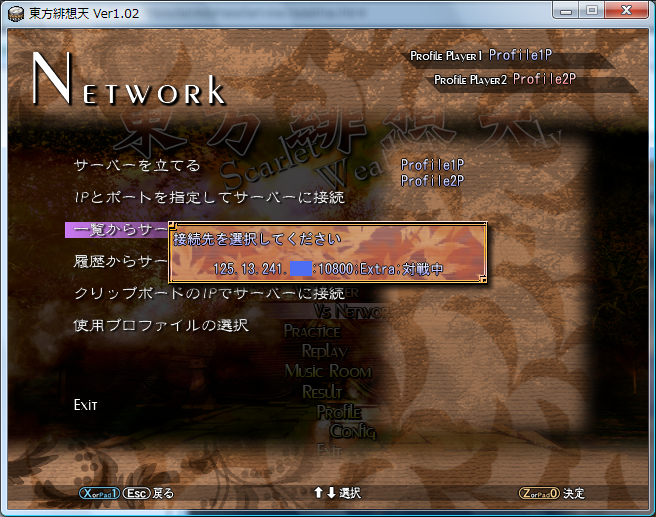
この画像のようにゲーム中で「一覧からサーバーに接続」を選んだ際、
一覧の情報からIP:ポート部分、ランク、対戦中/待機中が表示されます。
7．ユーザー設定
-
一般
初期入力IP、ポート、更新間隔、多重起動の許可/不許可、チャット先頭文字列、クライアント表示分割方向
ツールの各種表示色を設定します。
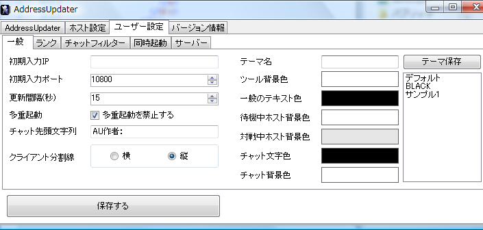 -
ランク
一覧フィルタ用、サーバー登録用のランク一覧を設定します。
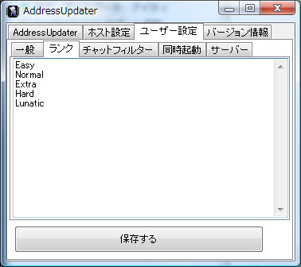 -
チャットフィルター
表示したくない単語を登録しておきます。登録した単語が***に変換されます。
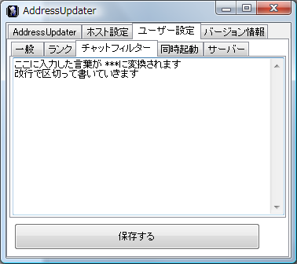 -
同時起動
AddressUpdaterと一緒に起動するソフトを設定します。
exeファイルかショートカットファイル(.lnk)をドラッグアンドドロップできます。
チェックを外すと起動されなくなります。
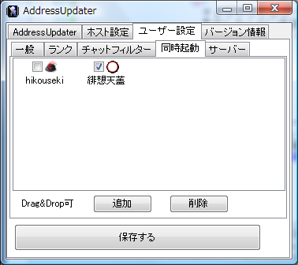 -
サーバー
サーバー選択ウィンドウに表示するサーバーを設定します。
インポートを行うと、auservers.txtの内容で上書きされます。
エクスポートを行うと、内容をauservers.txtに出力します。
チェックを外すとサーバー選択ウィンドウに表示されなくなります。
ここのサーバー名を編集すると、タブの表示名も変わります。
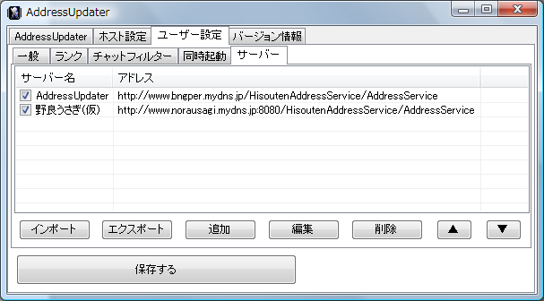
8．バージョン情報
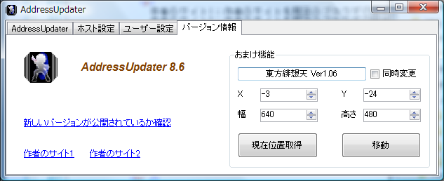
AddressUpdaterのバージョンが表示されます。
新しいバージョンが公開されているか確認：最新バージョンが公開されているかどうかを確認します。
作者のサイト1：作者のサイトを既定のブラウザで開きます。
作者のサイト2：作者のサイトを既定のブラウザで開きます。DDNSサービス障害用
おまけ機能：
(デフォルトなら)「東方緋想天 Ver1.06」というウィンドウの位置・サイズを
取得したり変更したりします。
9. アンインストール
解凍した時にできたファイルを消すだけです。
10．終わりに
お約束
ツールの質問やツールで展開したファイルの質問を本家にしたりしないでください。
東方緋想天の著作権は「黄昏フロンティア」「上海アリス幻樂団」に帰属します。
免責事項
このソフトによって起こったいかなる損害にも、開発者は責任を負わないものとします。